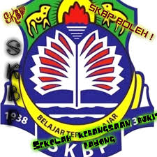

ASSALAMUALAIKUM
| Home |
| My Biodata |
Family |
Hobby |
Experience |
Education |
Gallery |
List of My Education
- Pasti An-Najah
- Sekolah Kebangsaan Bukit Payong (SKBP)
- Sekolah Menengah Kebangsaan Agama Durian Guling (SMKADG)
- Universiti Teknologi Mara Cawangan Kedah (UITMK)
- Pasti An-Najah
I started my learning environment at age 5 year old.
Pasti An-Najah as my first place of study. My mom choose Pasti An-Najah as my study place because
I had a cousin named Damia Zara who was 6 years old at the time also study there.
Because my cousin is there, when I get home I will be back with my cousin invited by her aunt and
will be staying in my cousin's grandparents house until my mom comes to pick up me.
Of course An-Najah I have many good friends and teachers who teach me until I am good at reading and counting.
At Pasti An-Najah, we were given a special green shirt that we should
wear every day while on the recreation day we were given a yellow sports shirt to wear at that time. Every day of
recreation or otherwise known as the subject of physical education, we would go out to our playground field where
near the Surau Padang Mengkuang. There, we are free to do whatever activities we like.
- Sekolah Kebangsaan Bukit Payong

After graduating at Pasti An-Najah must have been 6 years old.
I continue my education at Sekolah Kebangsaa Bukit Payong.. SK Bukit Payong is where my mother works as
a teacher. Therefore, I went to school because my mother also taught 1st year students. However, my mother
did not teach me because my mother taught class 1 Arif but I got 1 Elit.
In SK Bukit Payong, I became friends with Nurul Nabilah, who is also
Nurhayati's school teacher. In addition, I also have good friends named Amira, Aqidah and Eisyah. We were always
together no matter what time of day, when we got home from school and when we were doing our school homework,
we would do it together and others.
In 3rd grade, I have to take the KAFA class, a special religious class that will start at 3pm. This KAFA class
has its own exam called the Ujian Penilaian Kelas KAFA (UPKK) which needs to be taken in 5th grade. Finally,
I took the UPSR test, which is the Ujian Penilaian Sekolah Rendah to complete my primary school certificate.
- Sekolah Menengah Kebangsaan Agama Durian Guling
After receiving the excellent UPSI result,
I made the decision and requested an offer to attend Sekolah Menengah Kebangsaan
Agama Durian Guliang. After the second session, I finally managed to get into the
school with the help of my mom. I am very grateful to be able to obtain such education.
At SMKA Durian Guling, I made new friends namely Siti Nur Hidayah and Nurul Norashikin.
However, Amira, Nabilah and Aina, a my good friend at SK Bukit Payong also went to school with me because they also had outstanding results.
Here, my subjects are mathematics because Reduzan and Shida teachers are my favorite teachers.
Everything they teach, I can easily understand because their teaching methods are so effective and easy to understand. In addition,
I entered the uniformed unit is “Kadet Remaja Sekolah”, environmental club and badminton.
- Universiti Teknologi Mara Cawangan Kedah
My current education, I can continue my current study at the diploma level, Library Management
course at University Teknology Mara Kedah Branch. I am in the final semester of Sem 4. I entered the UITMK in July 2018. The first friend
I got was my roommate named Nurul Izzati Binti Rizazul. After a week, I got to know Najihah and Athirah with the same course as me who was
a year older than me.
Before entering my first class, Najihah introduced me to Nurulhuda who was my classmate and
until the end of the semester I was friends with her. Later, I would also like to tell you about my group assignment, if there is a group
assignment I must be a group with the Huda, Syazwani and Noratikah. Also, there are many activities done by Uitm and I need to join in
order to fulfill my college coupons in order to sit in college again but I can sit in college for only 2 semesters.
In sem 3 and sem 4, I, Huda, Najihah and Athirah stayed in a rented house in Lembah Merbok
where Puan Nurhayati was the host. My friend and I are going to Uitm bus climbing class. Bus time will move according to the schedule.
Finally, in the UITMK I faced many challenges to complete my diploma study but I was able to cope with my friends.